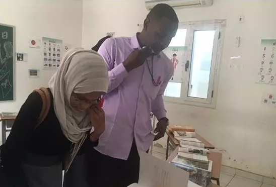
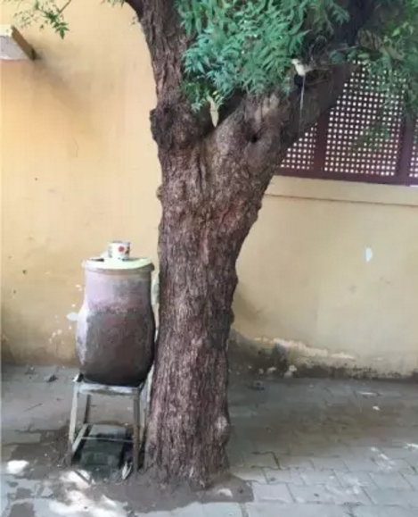

志愿感言 | 非洲以北，尼罗之滨
 1,256
1,256
作者：苏丹喀土穆大学孔子学院 姜鉴鉴
2016年9月18日，伴随着午日的烈阳，飞机降落在喀土穆机场，而我也终于踏上了苏丹这片飘扬着黄沙的土地。第一次感知苏丹，是在照片里，一张张笑脸让我即刻对苏丹产生了好感。真正来到苏丹，笑脸也从相框里走下，那么直接地展现在我的面前。看着如花的灿烂笑靥，我庆幸着自己的选择。
一、初识喀土穆，幸遇尼罗
苏丹尼罗河夜景
苏丹的首都是喀土穆，这里的时间比国内的时间晚了5个小时。5个小时的时间让我和国内联系没那么方便，但是5个小时的时差也使得我和苏丹有了更多的独处时间。于是我游历了尼罗河，看到了青、白尼罗河的相遇、交汇，而后以尼罗河的姿态优雅前行。这是一条满载历史和文明的河流，没有奔腾浩荡的河水，却静水流深。游历尼罗河是在一个傍晚，落日的余晖还在，河边散落着露天餐厅，昏黄的灯光映衬着余晖，三三两两地坐着几个吃饭吹风的游人。尼罗河的游船灯火辉煌，除了工作人员，基本都是外国的游客，不同肤色的人汇聚在同一条船上，都只是为了感受尼罗河的夜的静谧。游船开启的刹那，脑中飞速地闪过一切有关于尼罗河的传说，有埃及的，也有苏丹的，尼罗河就这么静静地哺育着流经地区的人们，给予人们生命的源泉。
二、日光下的苏丹，处处风情
苏丹是一个穆斯林国家，因此所有女性都戴着头巾，但是头巾并不是一成不变的，而是颜色各异。款式也各有不同，长款的、短款的，甚至还有连体的。年轻的女孩都喜欢花哨一些的颜色和款式，远远地望过去，仿佛鲜花正在娇艳盛放。苏丹人会在路边安放一些尖底的水缸和杯子，即便是过路的行人渴了也可以随手拿起杯子喝水，这种一家人的概念使得苏丹人变得更加可爱。苏丹人也很喜欢照相，哪怕这张照片自己永远都不会看到，但是照相的时候他们总会凑过来，拍下照片的时候会看到闪光灯一闪，即使是在白天。第一次闪光灯亮了，我很诧异，第二次第三次以后也就习惯了，慢慢地我发现闪光灯镜头下的他们笑容更为灿烂，眼睛更为明亮。
热带的生活让苏丹人变得更为热情，走在路上，一路都会听到陌生人向我打招呼，一路的“你好”，一路的花开，甚至路上的尘土也变得可爱起来。坐在苏丹的三轮车上，司机会和我们闲聊，用有限的英语问我们：“China？Philippines？”一旦听到“China”就会开心地说“sei-ni、sei-ni（中国、中国）”。
三、生活以外，更有工作

40度停电环境下，仍在看书的学生
作为一名志愿者，来苏丹的首要任务就是教学。我任教的地点在喀土穆大学孔子学院。拥有着114年历史的喀土穆大学至今仍是非洲的顶尖学府，这里的学生对于汉语学习的热情也极高。每次上课，一遇到不知道的生词，学生就会积极提问，在课后也会自己学习。许多学生在上课前2小时已经到达，开始预习或复习课文，甚至有学生将当做家，整日在的教室里学习。每次上课，看着学生亮晶晶、渴求知识的眼睛，就会充满感动。学生会在课前用湿抹布把黑板擦干净，下课会恭恭敬敬地齐声说：“谢谢老师，老师再见。”
的院长田河院长也会悉心指导我们工作，在我们遇到困难时，的老志愿者也会给予我们帮助，在这种环境下，我们的工作怎么能不顺利进行。
四、心的成长，梦的向往

尖底水缸
在到达苏丹之前，尽管对非洲极为向往，但是仍旧有些担忧。但当真正达到了这片土地，所有的疑虑被尽数打消。在这两个月里，我感受了苏丹的骄阳，体会了苏丹的干燥，了解了苏丹生活，有好的有不好的。但回望过去的两个月，我记住更多的却是学生的脸，有李小龙，有成龙，一样的名字，却是不同肤色的脸。在这两个月里，我感受到了心的成长，更感受到了学生对于梦的向往。
尼罗河还在静静地流淌，淌过低川、淌过平原、淌过国境线，最终入海，而我的生活也在逐步向前迈进，一步一步，缓慢却实在。我，留恋这种实在的感觉。